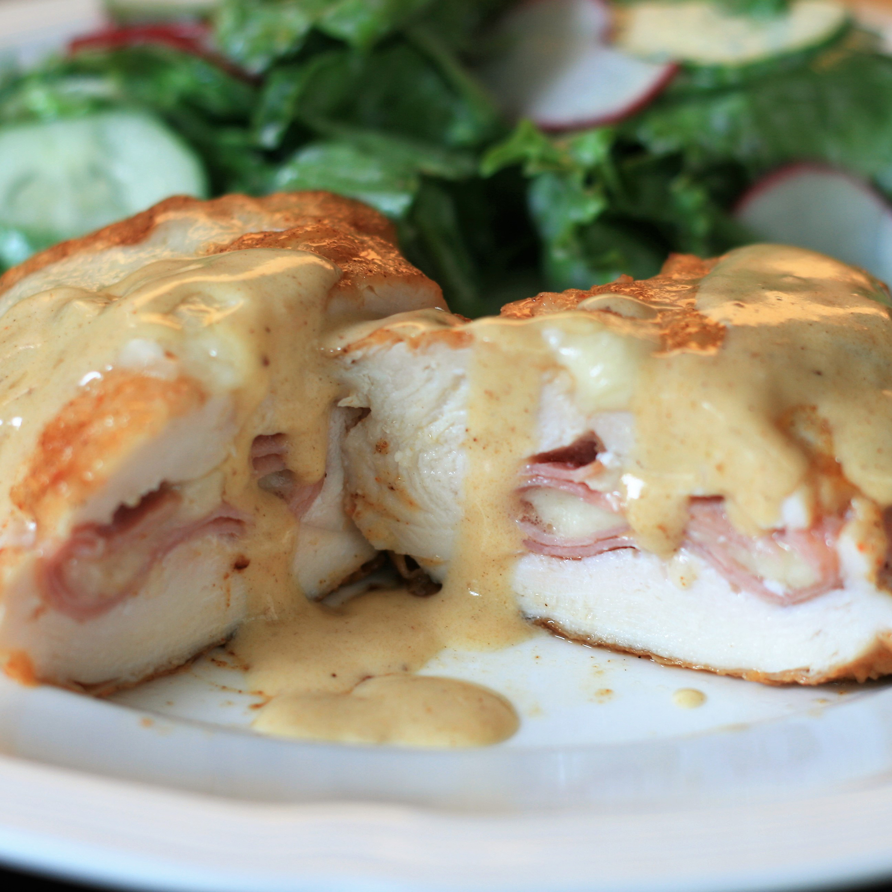

Classic Chicken Cordon Bleu

Description
Cordon Bleu is a French term, literally translated as 'blue ribbon', that originally referred to an award for culinary excellence given to women cooks!
The term can now apply to any
superior cook (yes, men too), and also to this dish (chicken, ham and Swiss cheese slices, breaded and sauteed). This yummy version adds paprika and a creamy white wine sauce
worthy of its own blue ribbon. Two blue ribbon tastes in wedded bliss -- Chicken Cordon Bleu!
Ingredients
- 6 skinless, boneless chicken breasts halves
- 6 slices Swiss cheese
- 6 slices ham
- 3 tablespoons all-purpose flour
- 1 teaspoon paprika
- 6 tablespoons butter
- 1/2 cup dry white wine
- 1 teaspoon chicken bouillon granules
- 1 tablespoon cornstarch
- 1 cup heavy whipping cream
Steps
- Pound chicken breasts if they are too thick. Place a cheese and ham slice on each breast within 1/2 inch of the edges. Fold the edges of the chicken over the filling,
and secure with toothpicks. Mix the flour and paprika in a small bowl, and coat the chicken pieces.
- Heat the butter in a large skillet over medium-high heat, and cook the chicken until browned on all sides. Add the wine and bouillon. Reduce heat to low, cover, and
simmer for 30 minutes, until chicken is no longer pink and juices run clear.
- Remove the toothpicks, and transfer the breasts to a warm platter. Blend the cornstarch with the cream in a small bowl, and whisk slowly into the skillet. Cook, stirring
until thickened, and pour over the chicken. Serve warm.